[Java スタディ - 35] EclipseでSpring web frameworkを利用してウェブサービスプロジェクトを立ち上がる方法
こんにちは。明月です。
このページは「Eclipse」で「Spring web framework」を利用してウェブサービスプロジェクトを立ち上がる方法に関して調べてみました。
先に「Spring web framework」でウェブサービスプロジェックとを作成する前に「maven」インストールと「Servlet」作成に関して知らなければならないです。
link - [Java スタディ - 32] Mavenをインストール、使用方法、そしてeclipseに連結する方法
link - [Java スタディ - 34] Web serviceプログラムのServletを作成方法(Eclipse)
先にサブレットプロジェクトを作成しましょう。
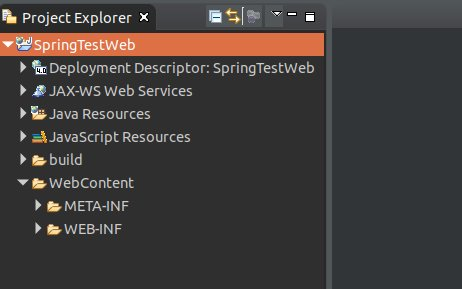
そしてMavenプロジェクトに変換しましょう。
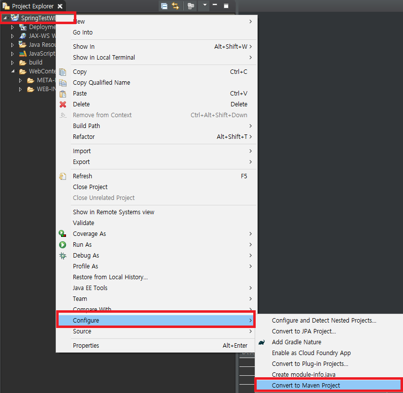
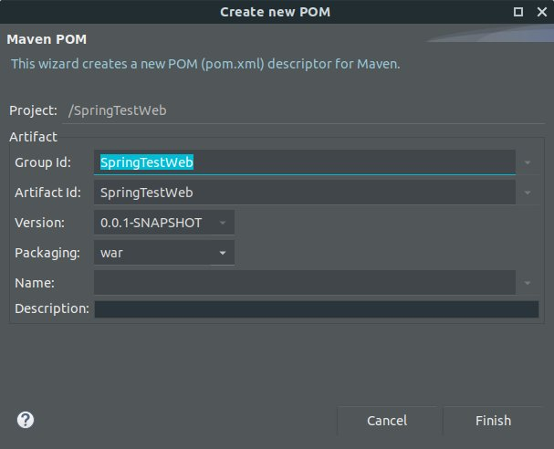
そして「pom.xml」で「spring framework」ライブラリを登録して、ライブラリをダウンロードするし、連携しましょう。
<dependencies>
<dependency>
<groupId>org.springframework</groupId>
<artifactId>spring-webmvc</artifactId>
<version>5.1.1.RELEASE</version>
</dependency>
<dependency>
<groupId>javax.servlet</groupId>
<artifactId>jstl</artifactId>
<version>1.2</version>
</dependency>
<dependency>
<groupId>javax.servlet</groupId>
<artifactId>javax.servlet-api</artifactId>
<version>3.1.0</version>
</dependency>
</dependencies>
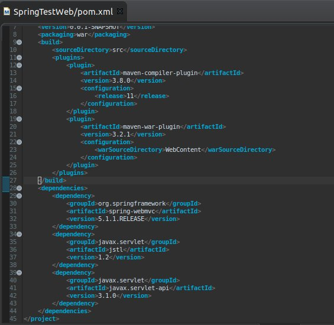
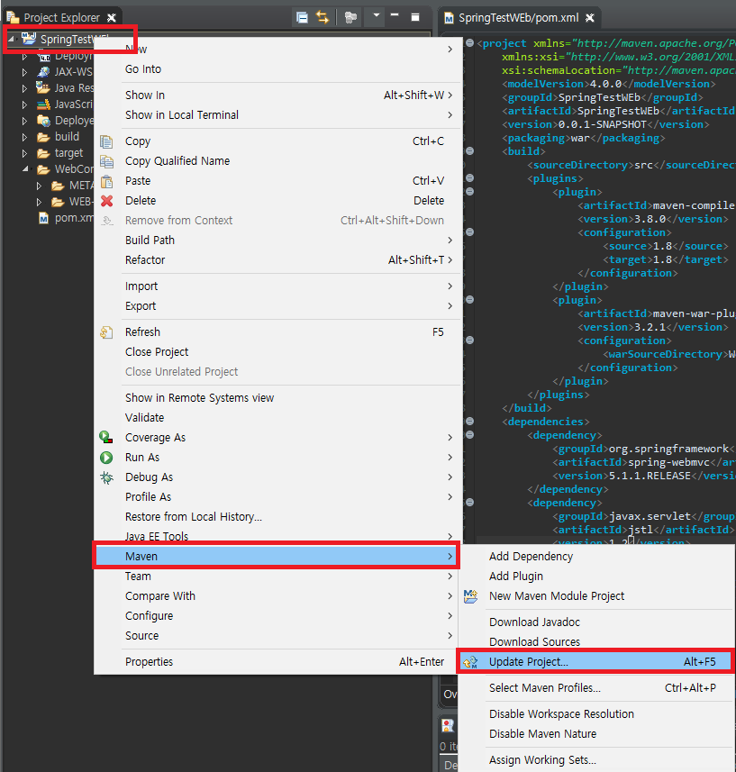
そして「mvc-config.xml」を「WebContent -> WEB-INF」フォルダの中で生成しましょう。
<?xml version="1.0" encoding="UTF-8"?>
<beans xmlns="http://www.springframework.org/schema/beans" xmlns:xsi="http://www.w3.org/2001/XMLSchema-instance"
xmlns:mvc="http://www.springframework.org/schema/mvc" xmlns:context="http://www.springframework.org/schema/context"
xsi:schemaLocation="http://www.springframework.org/schema/mvc http://www.springframework.org/schema/mvc/spring-mvc.xsd
http://www.springframework.org/schema/beans http://www.springframework.org/schema/beans/spring-beans.xsd
http://www.springframework.org/schema/context http://www.springframework.org/schema/context/spring-context.xsd">
<!-- コントローラのパッケージ設定 -->
<context:component-scan base-package="controller"/>
<mvc:annotation-driven>
<mvc:message-converters>
<bean class="org.springframework.http.converter.StringHttpMessageConverter">
<property name="supportedMediaTypes">
<list>
<value>text/html;charset=UTF-8</value>
</list>
</property>
</bean>
</mvc:message-converters>
</mvc:annotation-driven>
<!-- view 設定フォルダ -->
<bean class="org.springframework.web.servlet.view.InternalResourceViewResolver">
<property name="prefix" value="/WEB-INF/view/"/>
<property name="suffix" value=".jsp"/>
</bean>
</beans>
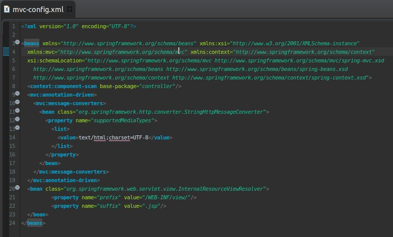
そして「web.xml」で「mvc-config.xml」を設定しましょう。
<?xml version="1.0" encoding="UTF-8"?>
<web-app xmlns:xsi="http://www.w3.org/2001/XMLSchema-instance"
xmlns="http://xmlns.jcp.org/xml/ns/javaee"
xsi:schemaLocation="http://xmlns.jcp.org/xml/ns/javaee http://xmlns.jcp.org/xml/ns/javaee/web-app_4_0.xsd"
version="4.0">
<display-name>SpringTestWeb</display-name>
<!-- ルート(/)の時のページ -->
<welcome-file-list>
<welcome-file>index.html</welcome-file>
</welcome-file-list>
<!-- mvc-config.xml 設定 -->
<servlet>
<servlet-name>dispatcherServlet</servlet-name>
<servlet-class>org.springframework.web.servlet.DispatcherServlet</servlet-class>
<init-param>
<param-name>contextConfigLocation</param-name>
<param-value>/WEB-INF/mvc-config.xml</param-value>
</init-param>
<load-on-startup>1</load-on-startup>
</servlet>
<!-- web url パターン, *.html 拡張子で requestすると spring frameworkで読み込む -->
<servlet-mapping>
<servlet-name>dispatcherServlet</servlet-name>
<url-pattern>*.html</url-pattern>
</servlet-mapping>
<!-- encoding パターン (Postなどでヘッドの値のインコディング設定) -->
<filter>
<filter-name>encodingFilter</filter-name>
<filter-class>org.springframework.web.filter.CharacterEncodingFilter</filter-class>
<init-param>
<param-name>encoding</param-name>
<param-value>UTF-8</param-value>
</init-param>
<init-param>
<param-name>forceEncoding</param-name>
<param-value>true</param-value>
</init-param>
</filter>
<filter-mapping>
<filter-name>encodingFilter</filter-name>
<url-pattern>/*</url-pattern>
</filter-mapping>
</web-app>
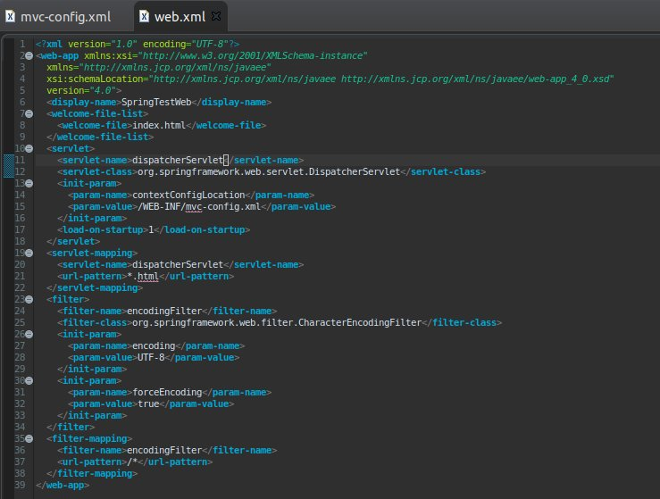
「Spring framework」の設定はここまでです。これから「Controller」を作成しましょう。
先に「mvc-config.xml」ファイルで「Controller」パッケージ名を「controller」で設定しましたので、「controller」パッケージで「Helloworld」クラスを生成しましょう。
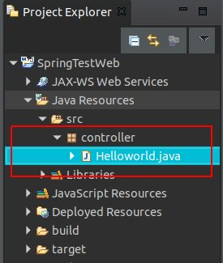
package controller;
import javax.servlet.http.HttpServletRequest;
import javax.servlet.http.HttpServletResponse;
import javax.servlet.http.HttpSession;
import org.springframework.stereotype.Controller;
import org.springframework.ui.ModelMap;
import org.springframework.web.bind.annotation.RequestMapping;
@Controller
public class Helloworld {
// url パターン
@RequestMapping(value = "/index.html")
public String index(ModelMap modelmap, HttpSession session, HttpServletRequest req, HttpServletResponse res) {
// データを渡すような modelmap
modelmap.addAttribute("Data", "Helloworld");
// viewのファイル名
return "index";
}
}
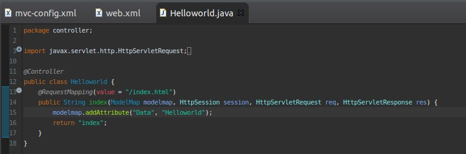
「controller」クラスで重要なことは「@Controller」のアトリビュートを設定することです。そして関数で「url」マッピングパターンを入れて関数でアトリビュートを指定します。
上のソースの場合は「/index.html」で要請されると「index」関数が呼び出されますね。参考にルートのページは「index.html」で指定しましたので、ルートページがその関数を呼出します。
「modelmap」でキーとデータを入れると「view」でデータを渡します。
「return」の値は「string」タイプですがそれが「view」のファイル名を指定します。私の場合は「index」でリターンしますね。
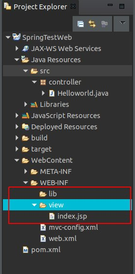
<%@ page language="java" contentType="text/html; charset=UTF-8" pageEncoding="UTF-8"%>
<!DOCTYPE html>
<html>
<head>
<meta charset="UTF-8">
<title>Insert title here</title>
</head>
<body>
<!-- modelmapで渡してもらうデータ -->
${Data}
</body>
</html>
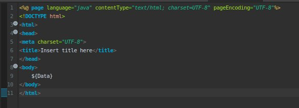
ここまで起動するための基本設定が完了しました。私が予想することは起動すると「Hello world」ページが見えることです。
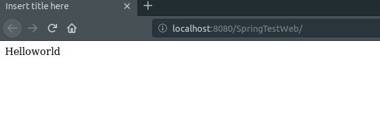
予想とろりで結果が出ました。ここまで「Spring web server」の基本構築が完了しました。
添付ファイルを添付します。
添付 -  SpringTestWeb.zip
SpringTestWeb.zip
- [Javaスタディ- 52] Java servletでインスタンスを初期する方法2019/10/17 07:15:48
- [Javaスタディ- 51] Spring web frameworkで発生する文字化けのEncoding設定2019/10/16 07:32:55
- [Javaスタディ- 50] Web Spring frameworkでfilter設定2019/10/15 20:12:35
- [Javaスタディ- 49] Web serviceのweb.xmlでエラーページ設定2019/10/14 20:13:44
- [Javaスタディ- 48] JPAのDAOをFactoryパターンで管理する方法2019/10/13 22:55:52
- [Java スタディ - 47] JPAのSpring frameworkで依存性注入する方法2019/10/13 00:40:08
- [Java スタディ - 46] JPAでDAOを生成する方法2019/10/11 07:30:14
- [Java スタディ - 45] JPAでトランザクションの使用方法とオブサーバーパターンで共通トランザクション関数を作り方2019/10/10 07:29:43
- [Java スタディ - 44] JPAのQuery を作り方2019/10/09 07:34:08
- [Java スタディ - 43] JPAのEntityクラス設定(Cascade, fetch)2019/10/08 07:43:33
- [Java スタディ - 42] JPAでpersistance.xml設定とentityクラス設定(@GeneratedValue設定)2019/10/07 07:38:13
- [Java スタディ - 41] EclipseでJPAフレームワーク設定する方法2019/10/04 19:24:43
- [Java スタディ - 40] Web spring frameworkのJSPで使う言語 JSTL - XML2019/10/03 20:02:06
- [Java スタディ - 39] Web spring frameworkのJSPで使う言語 JSTL - 関数、データベース2019/10/02 21:00:22
- [Java スタディ - 38] Web spring frameworkのJSPで使う言語 JSTL - コアー、フォーマッティング2019/10/01 21:48:08
- [Linux] ディスク使用率チェック(df, du, lsof)とdfバグを解決方法2019/10/24 21:46:31
- [CentOS] Wheel設定2019/10/23 23:53:40
- [CentOS] システムの文字セット変更2019/10/21 16:58:39
- [CentOS] Vim編集ツールをインストールする方法2019/10/21 00:24:44
- [Linux] Putty使用方法2019/10/20 00:42:54
- [Window] Apacheをインストール方法、サービスに登録する方法。2019/10/18 07:36:51
- [Javaスタディ- 52] Java servletでインスタンスを初期する方法2019/10/17 07:15:48
- [Javaスタディ- 51] Spring web frameworkで発生する文字化けのEncoding設定2019/10/16 07:32:55
- [Javaスタディ- 50] Web Spring frameworkでfilter設定2019/10/15 20:12:35
- [Javaスタディ- 49] Web serviceのweb.xmlでエラーページ設定2019/10/14 20:13:44
- [Javaスタディ- 48] JPAのDAOをFactoryパターンで管理する方法2019/10/13 22:55:52
- [Java スタディ - 47] JPAのSpring frameworkで依存性注入する方法2019/10/13 00:40:08
- [Java スタディ - 46] JPAでDAOを生成する方法2019/10/11 07:30:14
- [Java スタディ - 45] JPAでトランザクションの使用方法とオブサーバーパターンで共通トランザクション関数を作り方2019/10/10 07:29:43
- [Java スタディ - 44] JPAのQuery を作り方2019/10/09 07:34:08